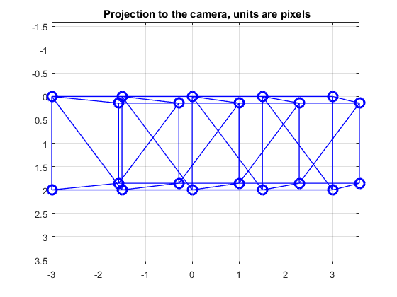

Contents
%%%%%%%%%%%%%%%%%%%%%%%%%%%%%%%%%%%%%%%%%%%%%%%%%%%%%%%%%%%%%%%%%%%%%%% % % Tarea 6 part 2, Homography: % % This file is an example of perspective correction with homography. % %%%%%%%%%%%%%%%%%%%%%%%%%%%%%%%%%%%%%%%%%%%%%%%%%%%%%%%%%%%%%%%%%%%%%%% % Call for functions to use addpath('Functions')
Create escene and images for homography analysis
More information look for Tarea 4
[X,L] = scenegen( 'Large', 10 ); X(4,:) = 1; display3Dscene([],X,L) campos([5,5,5]) FOV = 20; Lookat = {[0 0 1]'}; Position = [12 7 1]'; for i = 1:1 % two cameras campars.angle = FOV*(pi/180); % view angle campars.look_at = Lookat{i}; % orientation of optical axis campars.position = Position; % camera center cam(i).pars = cameragen( campars ); % generate cameras cam(i).u = cam(i).pars.P * X; % 3D -> 2D projection % normalization to image plane cam(i).u = cam(i).u ./ repmat( cam(i).u(3,:), 3, 1 ); end [F1, ~, ~] = MakeImage(X,L,cam(1).pars,2);
ans =
Figure (1) with properties:
Number: 1
Name: ''
Color: [0.9400 0.9400 0.9400]
Position: [680 558 560 420]
Units: 'pixels'
Use GET to show all properties
Homography between image and scene
idxcorr12 = [2 4 7 9]; H = u2Hdlt( X(2:4,idxcorr12), cam(1).u(:,idxcorr12) ); Nu = inv(H)*cam(1).u; Nu = Nu./repmat(Nu(3,:),3,1);
Parallel correction
display2Dpoints(3,cam(1).u,[1,cam(i).pars.width,1,cam(i).pars.height],'k','+',10,L); set(gca,'Box','on'); display2Dpoints(4,Nu,[1,10,1,10],'b','o',10,L); set(gca,'Box','on');